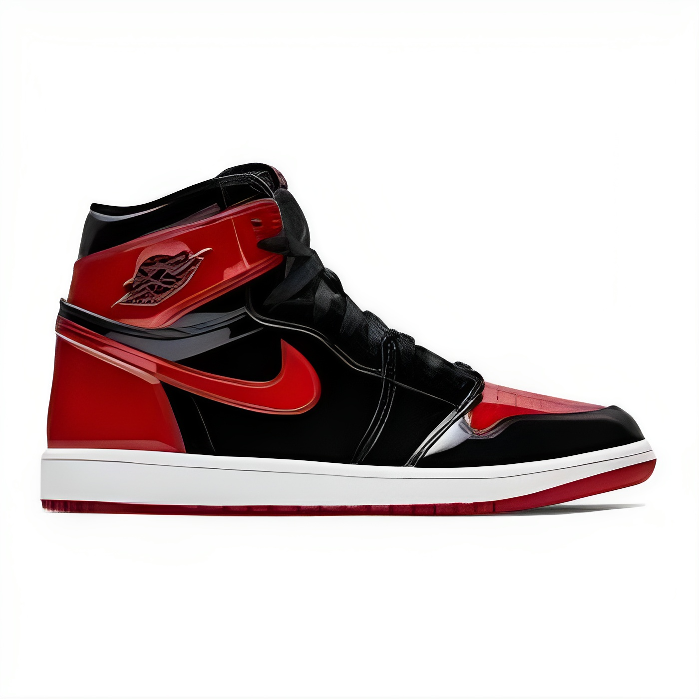
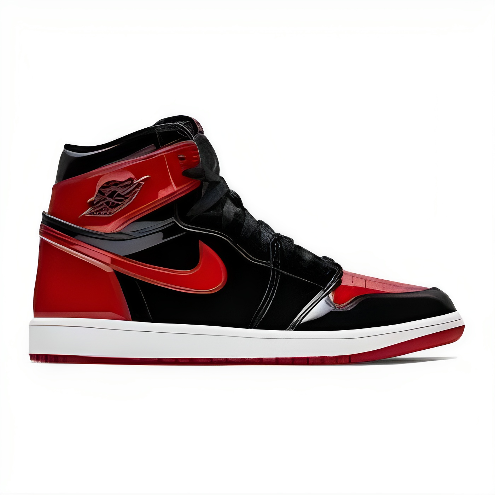
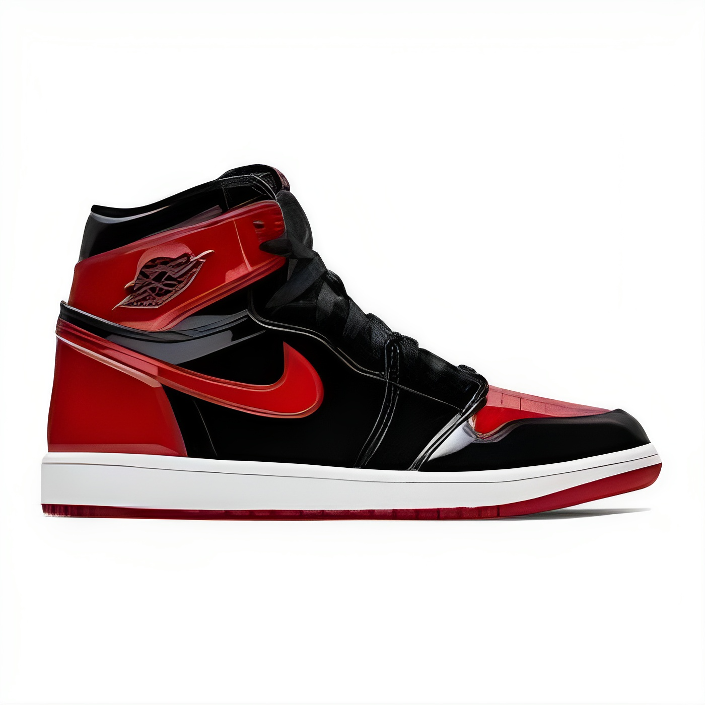

Conheça mais sobre a história dos pisantes:
Na década de 1980, jogadores de basquete e artistas do hip-hop começaram a ter um impacto cultural, transformando tênis em símbolos da cultura urbana. Um exemplo notável é Michael Jordan, que em 1984 assinou um contrato com a Nike para criar o "Air Jordan", um tênis inspirado em sua famosa jogada. Após o lançamento, os jovens fãs de esportes e os entusiastas do movimento passaram a usar esses tênis em seu dia a dia.
Saiba mais..."Sneakerhead" é uma expressão que vem da palavra inglesa "sneakers" (tênis em português). Em geral, ela é usada para descrever pessoas envolvidas na cultura urbana dos tênis, incluindo jovens que gostam de usar tênis estilosos e cheios de personalidade. Embora muitos associem "sneakerhead" a alguém viciado em tênis, o termo também se refere a colecionadores de modelos especiais e artistas que criam e personalizam seus próprios calçados.
Saiba mais...A Converse desempenha um papel central na cultura sneaker devido à sua longa história desde 1908. Destacam-se o icônico Chuck Taylor All Star e o estilo clássico que se adapta a diversas tendências. Sua versatilidade cultural, evidenciada em subculturas como punk e hip-hop, e as frequentes colaborações especiais contribuem para a exclusividade dos tênis. Além disso, a marca inova ao introduzir novos materiais e estilos, mantendo-se relevante ao longo das décadas. Em resumo, a Converse é essencial na cultura sneaker por sua tradição, design atemporal e capacidade de adaptação e inovação.
A Adidas tem uma história marcante e duradoura no mundo dos esportes e da moda desde sua fundação em 1949. A marca se tornou um ícone na cultura sneaker com modelos clássicos como o Superstar e o Stan Smith. A Adidas é reconhecida por sua inovação tecnológica, introduzindo tecnologias como Boost e Primeknit. Além disso, a marca realiza colaborações de destaque, tem presença na cultura pop e se destaca por sua abordagem sustentável. Sua capacidade de adaptação às tendências do streetwear e a ênfase na responsabilidade social contribuem para sua relevância contínua na cultura sneaker.
